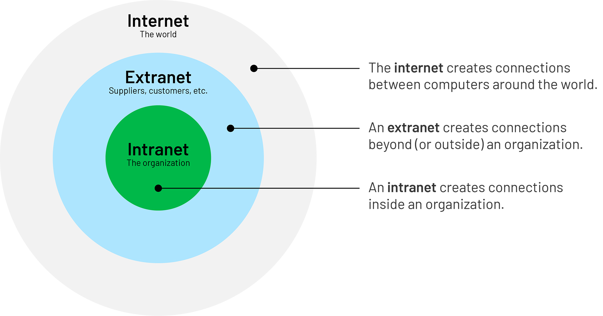

How Does the Web Work?
The World Wide Web is a systen where information can be retrieved with devices with an internet connection. Web-connected computers are either clients or servers.
- Clients are the user's internet connected device, and on it is a web browser. A web browser is a piece of application software which retrieves and displays information from a web server, such as Chrome or Firefox.
- Servers are a computer which stores information on websites, apps, etc. When the client sends a request, the browser will retrieve the information from the web server and display it for the client.
However, there are many more components involved along the journey, such as an internet connection and internet protocols, which will be explained later. Here is a simplified diagram of the process:

World Wide Web vs Internet
The terms "web" and "internet" are usually used interchangably, but they actually are two different things. The world wide web are the pages and websites you see on the client device, while the internet is the network of computers connected together, which is what the web operates on. This is also where information travels from between clients and servers.
The Intranet
An intranet is a local network of connected computers. It is just like the internet, just on a smaller scale and is usually restricted to members of the organisation. This allows for the organisation to build the intranet to be more specialised in their tasks, and would allow members to share, store and organise information more efficiently. The intranet can rely on the internet to work, but ones that do not require an internet connection can exist as well. Organisations can also allow users to access the internet through their own servers, which can block certain pages. An example of an intranet can be a school, as only students and staff at the school can access the information inside the computers.
Internet Protocols
An internet protocol is a set of rules that tells how information should be delivered over the internet. Common protocols include:
- Hypertext Transfer Protocol (HTTP) - HTTP defines a language for clients and servers to communicate with each other. It communicates in individual messages rather than a constant stream of data.
- Internet Protocol Suite (TCP/IP) - The Internet Protocol Suite's foundational protocols are the Transmission Control Protocol (TCP) and the Internet Protocol (IP). These protocols are used for communication, and connect devices across the internet. These define how information travel across the internet.
- File Transfer Protocol (FTP) - FTP is a communication protocol that defines how files should travel between a server and client. It permits the downloading and uploading of files over the internet.
Both HTTP and FTP rely TCP/IP, although HTML uses it more efficiently. HTTP is better at transferring smaller files, whereas FTP is more efficient at larger files. URL's using HTTP will start with HTTP, while FTP websites will start with FTP. Many more newer protocols have been introduced since the ones listed above, but are not internet standard.